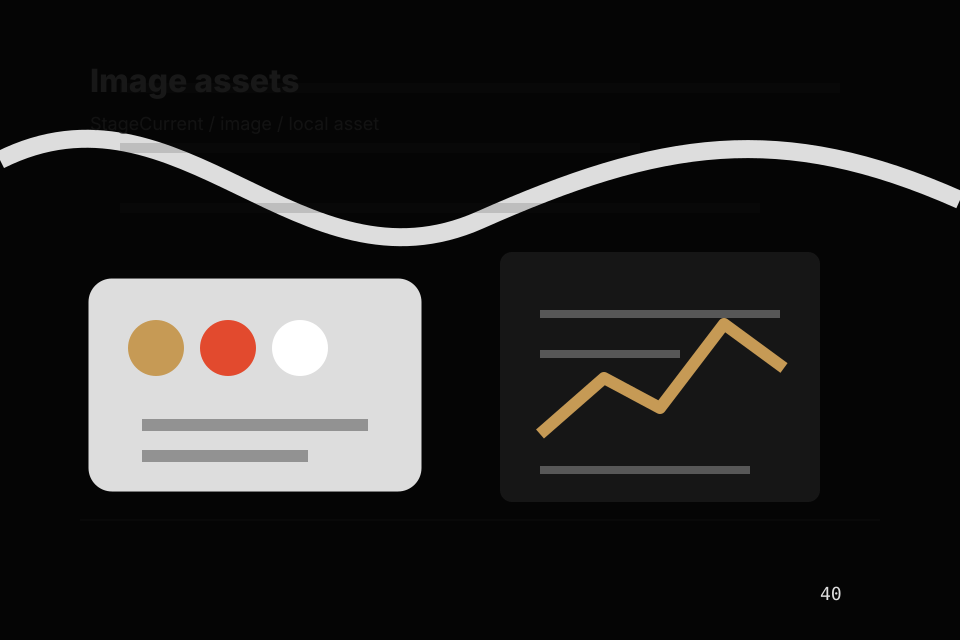

<!-- Source partial: Dark poster hero. -->
<section id="section-hero" class="section hero-section hero-dark-poster-hero composition-dark-poster-hero" data-section="Hero" data-composition="Dark poster hero" data-hero-type="Dark poster hero" data-track="section_home_hero">
  <div class="container hero-grid">
    <div class="hero-copy">
      <p class="eyebrow">Home / 01</p>
      <h1>StageCurrent</h1>
      <h2>An entertainment site with film-poster rhythm, dark editorial cards, ticket routes, and venue proof</h2>
      <p class="lead">StageCurrent brings high-energy live culture guidance to the opening route, with practical context for entertainment, music &amp; performance decisions and a clear route to the next step.</p>
      <p>StageCurrent connects the opening route with practical proof, useful comparisons, and the questions entertainment, music &amp; performance visitors bring to the page. Visitors can scan the essentials, understand the tradeoffs, and decide whether to view tickets or keep exploring. The rhythm is built for action without removing the context people need to trust the decision.</p>
      <div class="button-row">
        <a class="button primary" href="../contact.html" data-track="cta_home_hero">View Tickets</a>
        <a class="button secondary" href="https://ash-tra.com/discovery/" data-track="secondary_home_hero">Discuss build</a>
      </div>
      
      <div class="hero-proof" aria-label="Trust notes">
        <span>Exposure review</span><span>Control plan</span><span>Response route</span>
      </div>
<div class="container signature-panel signature-tickets" data-signature="tickets" data-page="home" data-section-key="hero">
    <div>
      <p class="eyebrow">Dark poster hero</p>
      <h3>Choose ticket fit</h3>
      <p>Select a path and StageCurrent keeps the next step, proof, and follow-up expectation aligned with excitement and access.</p>
    </div>
    <div class="signature-controls" role="group" aria-label="Event calendar, ticket selector, artist filter">
      <button type="button" data-option="assess" aria-pressed="true">Assess</button><button type="button" data-option="contain" aria-pressed="false">Contain</button><button type="button" data-option="respond" aria-pressed="false">Respond</button>
    </div>
    <output data-signature-output aria-live="polite">Assess route selected for StageCurrent.</output>
  </div>
    </div>
    <figure class="hero-media target-media target-kind-posterwall target-profile-a24">
      <div class="target-stage target-posterwall target-profile-a24" aria-hidden="true">
  <div class="poster-grid"><article><span>Hook</span></article><article><span>Upcoming</span></article><article><span>Artists</span></article><article><span>Tickets</span></article></div>
  <div class="target-strip"><b>StageCurrent</b><span>View Tickets</span></div>
</div>
      <picture>
        <source media="(max-width: 640px)" srcset="../assets/images/hero/entertainment-home-hero-mobile.svg">
        <source media="(max-width: 1024px)" srcset="../assets/images/hero/entertainment-home-hero-tablet.svg">
        
      </picture>
      <figcaption>Film posters, stage stills, credits, audience moments expressed through a custom static visual system.</figcaption>
    </figure>
  </div>
</section>
